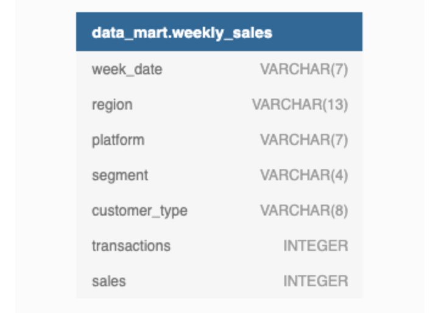

Case Study #2 - Data Mart

Introduction
Data Mart is Danny’s latest venture and after running international operations for his online supermarket that specialises in fresh produce - Danny is asking for your support to analyse his sales performance.
In June 2020 - large scale supply changes were made at Data Mart. All Data Mart products now use sustainable packaging methods in every single step from the farm all the way to the customer.
Danny needs your help to quantify the impact of this change on the sales performance for Data Mart and it’s separate business areas.
The key business question he wants you to help him answer are the following:
What was the quantifiable impact of the changes introduced in June 2020?
Which platform, region, segment and customer types were the most impacted by this change?
What can we do about future introduction of similar sustainability updates to the business to minimise impact on sales?
Available Data
For this case study there is only a single table: data_mart.weekly_sales
The Entity Relationship Diagram is shown below with the data types made clear, please note that there is only this one table - hence why it looks a little bit lonely!

Column Dictionary
The columns are pretty self-explanatory based on the column names but here are some further details about the dataset:
Data Mart has international operations using a
multi-regionstrategyData Mart has both, a retail and online
platformin the form of a Shopify store front to serve their customersCustomer
segmentandcustomer_typedata relates to personal age and demographics information that is shared with Data Mart.transactionsis the count of unique purchases made through Data Mart and sales is the actual dollar amount of purchases
Each record in the dataset is related to a specific aggregated slice of the underlying sales data rolled up into a week_date value which represents the start of the sales week.
Example Rows
10 random rows are shown in the table output below from data_mart.weekly_sales:
| week_date | region | platform | segment | customer_type | transactions | sales |
|---|---|---|---|---|---|---|
| 9/9/20 | OCEANIA | Shopify | C3 | New | 610 | 110033.89 |
| 29/7/20 | AFRICA | Retail | C1 | New | 110692 | 3053771.19 |
| 22/7/20 | EUROPE | Shopify | C4 | Existing | 24 | 8101.54 |
| 13/5/20 | AFRICA | Shopify | null | Guest | 5287 | 1003301.37 |
| 24/7/19 | ASIA | Retail | C1 | New | 127342 | 3151780.41 |
| 10/7/19 | CANADA | Shopify | F3 | New | 51 | 8844.93 |
| 26/6/19 | OCEANIA | Retail | C3 | New | 152921 | 5551385.36 |
| 29/5/19 | SOUTH AMERICA | Shopify | null | New | 53 | 10056.2 |
| 22/8/18 | AFRICA | Retail | null | Existing | 31721 | 1718863.58 |
| 25/7/18 | SOUTH AMERICA | Retail | null | New | 2136 | 81757.91 |
Interactive SQL Session
The Dataset for this case study can be accessed from here. I will be using MySQL to solve this case study. In order to solve yourself this case study, simply go to the above link and choose MySQL Dialect (version > 8, if using MySQL version higher than 8 locally), copy & paste the Database schema into MySQL.
Here is the snapshot of it.
CREATE SCHEMA data_mart;
USE data_mart;
DROP TABLE IF EXISTS data_mart.weekly_sales;
CREATE TABLE data_mart.weekly_sales (
`week_date` VARCHAR(7),
`region` VARCHAR(13),
`platform` VARCHAR(7),
`segment` VARCHAR(4),
`customer_type` VARCHAR(8),
`transactions` INTEGER,
`sales` INTEGER
);
INSERT INTO data_mart.weekly_sales
(`week_date`, `region`, `platform`, `segment`, `customer_type`, `transactions`, `sales`)
VALUES
('31/8/20', 'ASIA', 'Retail', 'C3', 'New', '120631', '3656163'),
('31/8/20', 'ASIA', 'Retail', 'F1', 'New', '31574', '996575'),
('31/8/20', 'USA', 'Retail', 'null', 'Guest', '529151', '16509610'),
('31/8/20', 'EUROPE', 'Retail', 'C1', 'New', '4517', '141942'),
('31/8/20', 'AFRICA', 'Retail', 'C2', 'New', '58046', '1758388'),
('31/8/20', 'CANADA', 'Shopify', 'F2', 'Existing', '1336', '243878'),
('31/8/20', 'AFRICA', 'Shopify', 'F3', 'Existing', '2514', '519502'),
('31/8/20', 'ASIA', 'Shopify', 'F1', 'Existing', '2158', '371417'),
('31/8/20', 'AFRICA', 'Shopify', 'F2', 'New', '318', '49557'),
('31/8/20', 'AFRICA', 'Retail', 'C3', 'New', '111032', '3888162'),
('31/8/20', 'USA', 'Shopify', 'F1', 'Existing', '1398', '260773'),
('31/8/20', 'OCEANIA', 'Shopify', 'C2', 'Existing', '4661', '882690'),
('31/8/20', 'SOUTH AMERICA', 'Retail', 'C2', 'Existing', '1029', '38762'),
('31/8/20', 'SOUTH AMERICA', 'Shopify', 'C4', 'New', '6', '917'),
('31/8/20', 'EUROPE', 'Shopify', 'F3', 'Existing', '115', '35215'),
('31/8/20', 'OCEANIA', 'Retail', 'F3', 'Existing', '551905', '30371770'),
('31/8/20', 'ASIA', 'Shopify', 'C3', 'Existing', '1969', '374327'),
('31/8/20', 'AFRICA', 'Retail', 'F1', 'Existing', '97604', '5185233'),
('31/8/20', 'OCEANIA', 'Retail', 'C2', 'New', '111219', '2980673'),
('31/8/20', 'USA', 'Retail', 'F1', 'New', '11820', '463738'),
('31/8/20', 'SOUTH AMERICA', 'Retail', 'F3', 'Existing', '1363', '65730'),
('31/8/20', 'AFRICA', 'Retail', 'C3', 'Existing', '284971', '14430196'),
('31/8/20', 'ASIA', 'Retail', 'F2', 'New', '70496', '2176980'),
('31/8/20', 'AFRICA', 'Shopify', 'F1', 'Existing', '2678', '478756'),
('31/8/20', 'USA', 'Shopify', 'C4', 'New', '22', '3319'),
('31/8/20', 'CANADA', 'Retail', 'F3', 'Existing', '94274', '5306746'),
('31/8/20', 'ASIA', 'Retail', 'F1', 'Existing', '94287', '4511841'),
('31/8/20', 'EUROPE', 'Retail', 'null', 'New', '3064', '134249'),
('31/8/20', 'EUROPE', 'Shopify', 'F1', 'New', '7', '1579'),
('31/8/20', 'SOUTH AMERICA', 'Retail', 'C4', 'New', '329', '11451'),
('31/8/20', 'SOUTH AMERICA', 'Retail', 'F1', 'Existing', '854', '31589'),
('31/8/20', 'EUROPE', 'Shopify', 'C2', 'Existing', '180', '53567')Case Study Questions
The following case study questions require some data cleaning steps before we start to unpack Danny’s key business questions in more depth.
1. Data Cleansing Steps
In a single query, perform the following operations and generate a new table in the data_mart schema named clean_weekly_sales:
Convert the
week_dateto a DATE formatAdd a
week_numberas the second column for eachweek_datevalue, for example any value from the 1st of January to 7th of January will be 1, 8th to 14th will be 2 etc.Add a
month_numberwith the calendar month for eachweek_datevalue as the 3rd column.Add a
calendar_yearcolumn as the 4th column containing either 2018, 2019 or 2020 values.Add a new column called
age_bandafter the original segment column using the following mapping on the number inside the segment value.
| segment | age_band |
|---|---|
| 1 | Young Adults |
| 2 | Middle Aged |
| 3 or 4 | Retirees |
- Add a new
demographiccolumn using the following mapping for the first letter in thesegmentvalues:
| segment | demographic |
|---|---|
| C | Couples |
| F | Families |
Ensure all
nullstring values with an"unknown"string value in the originalsegmentcolumn as well as the newage_bandanddemographiccolumnsGenerate a new
avg_transactioncolumn as thesalesvalue divided bytransactionsrounded to 2 decimal places for each record
2. Data Exploration
What day of the week is used for each week_date value?
What range of week numbers are missing from the dataset?
How many total transactions were there for each year in the dataset?
What is the total sales for each region for each month?
What is the total count of transactions for each platform
What is the percentage of sales for Retail vs Shopify for each month?
What is the percentage of sales by demographic for each year in the dataset?
Which age_band and demographic values contribute the most to Retail sales?
Can we use the avg_transaction column to find the average transaction size for each year for Retail vs Shopify? If not - how would you calculate it instead?
3. Before & After Analysis
This technique is usually used when we inspect an important event and want to inspect the impact before and after a certain point in time.
Taking the week_date value of 2020-06-15 as the baseline week where the Data Mart sustainable packaging changes came into effect.
We would include all week_date values for 2020-06-15 as the start of the period after the change and the previous week_date values would be before
Using this analysis approach - answer the following questions:
What is the total sales for the 4 weeks before and after 2020-06-15? What is the growth or reduction rate in actual values and percentage of sales?
What about the entire 12 weeks before and after?
How do the sale metrics for these 2 periods before and after compare with the previous years in 2018 and 2019?
4. Bonus Question
Which areas of the business have the highest negative impact in sales metrics performance in 2020 for the 12 week before and after period?
regionplatformage_banddemographiccustomer_type
Do you have any further recommendations for Danny’s team at Data Mart or any interesting insights based off this analysis?
Let’s start solving them.
1. Data Cleansing Steps
In a single query, perform the following operations and generate a new table in the data_mart schema named clean_weekly_sales:
Convert the
week_dateto a DATE formatAdd a
week_numberas the second column for eachweek_datevalue, for example any value from the 1st of January to 7th of January will be 1, 8th to 14th will be 2 etc.Add a
month_numberwith the calendar month for eachweek_datevalue as the 3rd column.Add a
calendar_yearcolumn as the 4th column containing either 2018, 2019 or 2020 values.Add a new column called
age_bandafter the original segment column using the following mapping on the number inside the segment value.
| segment | age_band |
|---|---|
| 1 | Young Adults |
| 2 | Middle Aged |
| 3 or 4 | Retirees |
- Add a new
demographiccolumn using the following mapping for the first letter in thesegmentvalues:
| segment | demographic |
|---|---|
| C | Couples |
| F | Families |
Ensure all
nullstring values with an"unknown"string value in the originalsegmentcolumn as well as the newage_bandanddemographiccolumnsGenerate a new
avg_transactioncolumn as thesalesvalue divided bytransactionsrounded to 2 decimal places for each record
Data Cleaning
Cleaning clean_weekly_sales Table
DROP TABLE IF EXISTS data_mart.clean_weekly_sales
CREATE TABLE data_mart.clean_weekly_sales AS (
SELECT
STR_TO_DATE(week_date, '%d/%m/%y') AS week_date,
WEEK(STR_TO_DATE(week_date, '%d/%m/%y')) AS week_number,
MONTH(STR_TO_DATE(week_date, '%d/%m/%y')) AS month_number,
YEAR(STR_TO_DATE(week_date, '%d/%m/%y')) AS calendar_year,
region,
platform,
CASE
WHEN RIGHT(segment, 1) = '1' THEN 'Young Adults'
WHEN RIGHT(segment, 1) = '2' THEN 'Middle Aged'
WHEN RIGHT(segment, 1) IN ('3', '4') THEN 'Retirees'
ELSE 'unknown' END AS age_band,
CASE
WHEN LEFT(segment, 1) = 'C' THEN 'Couples'
WHEN LEFT(segment, 1) = 'F' THEN 'Families'
ELSE 'unknown' END AS demographic,
COALESCE(NULLIF(segment, ''), 'unknown') AS segment,
transactions,
ROUND((sales / transactions), 2) AS avg_transaction,
sales
FROM data_mart.weekly_sales
);
UPDATE data_mart.clean_weekly_sales
SET age_band = 'unknown'
WHERE age_band IS NULL;
UPDATE data_mart.clean_weekly_sales
SET demographic = 'unknown'
WHERE demographic IS NULL;
UPDATE data_mart.clean_weekly_sales
SET segment = 'unknown'
WHERE segment IS NULL;
SELECT * FROM clean_weekly_sales
LIMIT 15;Output:
The first 15 records are shown as follows:
| week_date | week_number | month_number | calendar_year | region | platform | age_band | demographic_segment | transactions | avg_transaction | sales |
|---|---|---|---|---|---|---|---|---|---|---|
| 2020-08-31 | 35 | 8 | 2020 | ASIA | Retail | Retirees | Couples | 120631 | 30.31 | 3656163 |
| 2020-08-31 | 35 | 8 | 2020 | ASIA | Retail | Young Adults | Families | 31574 | 31.56 | 996575 |
| 2020-08-31 | 35 | 8 | 2020 | USA | Retail | unknown | unknown | null | 529151 | 31.20 |
| 2020-08-31 | 35 | 8 | 2020 | EUROPE | Retail | Young Adults | Couples | 4517 | 31.42 | 141942 |
| 2020-08-31 | 35 | 8 | 2020 | AFRICA | Retail | Middle Aged | Couples | 58046 | 30.29 | 1758388 |
| 2020-08-31 | 35 | 8 | 2020 | CANADA | Shopify | Middle Aged | Families | 1336 | 182.54 | 243878 |
| 2020-08-31 | 35 | 8 | 2020 | AFRICA | Shopify | Retirees | Families | 2514 | 206.64 | 519502 |
| 2020-08-31 | 35 | 8 | 2020 | ASIA | Shopify | Young Adults | Families | 2158 | 172.11 | 371417 |
| 2020-08-31 | 35 | 8 | 2020 | AFRICA | Shopify | Middle Aged | Families | 318 | 155.84 | 49557 |
| 2020-08-31 | 35 | 8 | 2020 | AFRICA | Retail | Retirees | Couples | 111032 | 35.02 | 3888162 |
| 2020-08-31 | 35 | 8 | 2020 | USA | Shopify | Young Adults | Families | 1398 | 186.53 | 260773 |
| 2020-08-31 | 35 | 8 | 2020 | OCEANIA | Shopify | Middle Aged | Couples | 4661 | 189.38 | 882690 |
| 2020-08-31 | 35 | 8 | 2020 | SOUTH AMERICA | Retail | Middle Aged | Couples | 1029 | 37.67 | 38762 |
| 2020-08-31 | 35 | 8 | 2020 | SOUTH AMERICA | Shopify | Retirees | Couples | 6 | 152.83 | 917 |
| 2020-08-31 | 35 | 8 | 2020 | EUROPE | Shopify | Retirees | Families | 115 | 306.22 | 35215 |
2. Data Exploration
1. What day of the week is used for each week_date value?
SELECT
DISTINCT DAYNAME(week_date) AS Day_Name
FROM clean_weekly_sales;Output:
| Day_name |
|---|
| Monday |
Day of the Week Analysis for Weekly Sales Data
Insight:
- The day of the week associated with each week_date value in the weekly_sales dataset is consistently Monday.
2. What range of week numbers are missing from the dataset?
WITH RECURSIVE NumbersSeries AS (
SELECT 1 AS week_number
UNION ALL
SELECT week_number + 1
FROM NumbersSeries
WHERE week_number < 52
)
SELECT NumbersSeries.week_number
FROM NumbersSeries
WHERE NOT EXISTS (
SELECT 1
FROM clean_weekly_sales
WHERE week_number = NumbersSeries.week_number
);Output:
| week_number |
|---|
| 1 |
| 2 |
| 3 |
| 4 |
| 5 |
| 6 |
| 7 |
| 8 |
| 9 |
| 10 |
| 11 |
| 36 |
| 37 |
| 38 |
| 39 |
| 40 |
| 41 |
| 42 |
| 43 |
| 44 |
| 45 |
| 46 |
| 47 |
| 48 |
| 49 |
| 50 |
| 51 |
| 52 |
Missing Week Numbers in the Dataset
Insight:
- Several week numbers are missing from the dataset, ranging from week 1 to week 11 and week 36 to week 52.
3. How many total transactions were there for each year in the dataset?
SELECT calendar_year,
SUM(transactions) as total_transactions
FROM clean_weekly_sales
GROUP BY calendar_year
ORDER BY calendar_year;Output:
| calendar_year | total_transactions |
|---|---|
| 2018 | 346,406,460 |
| 2019 | 365,639,285 |
| 2020 | 375,813,651 |
Total Transactions by Year
Insight:
- The total number of transactions has shown a consistent upward trend over the years, with 2018 starting at a lower value compared to subsequent years.
4. What is the total sales for each region for each month?
SELECT region, month_number,
SUM(sales) as total_sales
FROM clean_weekly_sales
GROUP BY region, month_number
ORDER BY region, month_number;Output:
| region | month_number | total_sales |
|---|---|---|
| AFRICA | 3 | 567,767,480 |
| AFRICA | 4 | 1,911,783,504 |
| AFRICA | 5 | 1,647,244,738 |
| AFRICA | 6 | 1,767,559,760 |
| AFRICA | 7 | 1,960,219,710 |
| AFRICA | 8 | 1,809,596,890 |
| AFRICA | 9 | 276,320,987 |
| ASIA | 3 | 529,770,793 |
| ASIA | 4 | 1,804,628,707 |
| ASIA | 5 | 1,526,285,399 |
| ASIA | 6 | 1,619,482,889 |
| ASIA | 7 | 1,768,844,756 |
| ASIA | 8 | 1,663,320,609 |
| ASIA | 9 | 252,836,807 |
| CANADA | 3 | 144,634,329 |
| CANADA | 4 | 484,552,594 |
| CANADA | 5 | 412,378,365 |
| CANADA | 6 | 443,846,698 |
| CANADA | 7 | 477,134,947 |
| CANADA | 8 | 447,073,019 |
| CANADA | 9 | 69,067,959 |
| EUROPE | 3 | 35,337,093 |
| EUROPE | 4 | 127,334,255 |
| EUROPE | 5 | 109,338,389 |
| EUROPE | 6 | 122,813,826 |
| EUROPE | 7 | 136,757,466 |
| EUROPE | 8 | 122,102,995 |
| EUROPE | 9 | 18,877,433 |
| OCEANIA | 3 | 783,282,888 |
| OCEANIA | 4 | 2,599,767,620 |
| OCEANIA | 5 | 2,215,657,304 |
| OCEANIA | 6 | 2,371,884,744 |
| OCEANIA | 7 | 2,563,459,400 |
| OCEANIA | 8 | 2,432,313,652 |
| OCEANIA | 9 | 372,465,518 |
| SOUTH AMERICA | 3 | 71,023,109 |
| SOUTH AMERICA | 4 | 238,451,531 |
| SOUTH AMERICA | 5 | 201,391,809 |
| SOUTH AMERICA | 6 | 218,247,455 |
| SOUTH AMERICA | 7 | 235,582,776 |
| SOUTH AMERICA | 8 | 221,166,052 |
| SOUTH AMERICA | 9 | 34,175,583 |
| USA | 3 | 225,353,043 |
| USA | 4 | 759,786,323 |
| USA | 5 | 655,967,121 |
| USA | 6 | 703,878,990 |
| USA | 7 | 760,331,754 |
| USA | 8 | 712,002,790 |
| USA | 9 | 110,532,368 |
Total Sales by Region and Month
Insight:
- Sales performance varies across regions and months, with some regions consistently outperforming others.
Overview:
- Africa: Shows a consistent increase in sales from March to July before a slight decline in August and September.
- Asia: Exhibits a similar trend to Africa, with increasing sales until July followed by a slight decrease in August and September.
- Canada: Sales follow a pattern similar to Africa and Asia, with a peak in July followed by a decline in August and September.
- Europe: Shows a steady increase in sales from March to July, followed by a slight decrease in August and September.
- Oceania: Shows the highest sales among all regions, with a peak in July followed by a decline in August and September.
- South America: Sales follow a similar pattern to other regions, with a peak in July followed by a decline in August and September.
- USA: Shows a consistent increase in sales from March to July before a slight decline in August and September.
Regional Variations:
- Oceania: consistently records the highest sales, indicating strong demand or market presence in that region.
- Europe: Reports the lowest sales compared to other regions, suggesting potential opportunities for growth or market penetration strategies.
Seasonal Trends:
- The months of March to July generally witness higher sales across all regions, suggesting potential seasonal factors or marketing campaigns driving increased consumer spending during this period.
- The decline in sales observed in August and September across most regions could be attributed to seasonal factors, economic conditions, or specific market dynamics.
Recommendations:
- Data Mart should analyze the factors contributing to the peak sales months to identify successful strategies and replicate them in other periods or regions.
- Targeted marketing campaigns or promotions could be implemented during periods of lower sales to stimulate demand and boost revenue.
- Understanding regional preferences and consumer behavior can help tailor marketing strategies and product offerings to maximize sales potential in each market.
5. What is the total count of transactions for each platform?
SELECT platform,
SUM(transactions) as total_transactions
FROM clean_weekly_sales
GROUP BY platform
ORDER BY platform;Output:
| platform | total_transactions |
|---|---|
| Retail | 1,081,934,227 |
| Shopify | 5,925,169 |
Total Transactions by Platform
Insight:
- The majority of transactions occur through the Retail platform compared to the Shopify platform.
Observations:
- The higher transaction count on the Retail platform suggests a strong presence in physical retail locations or a larger customer base utilizing traditional retail channels.
- The lower transaction count on the Shopify platform may indicate a smaller but growing segment of customers preferring online shopping experiences.
Opportunities:
- Data Mart could focus on enhancing its online platform to capture a larger share of the digital market and compete more effectively with traditional retail channels.
- Leveraging data analytics and customer insights from both platforms can help optimize marketing strategies and product offerings to target specific customer segments more effectively.
6. What is the percentage of sales for Retail vs Shopify for each month?
WITH platform_sales AS
(SELECT calendar_year, month_number,
SUM(CASE WHEN platform = 'Retail' THEN sales ELSE 0 END) AS retail_sales,
SUM(CASE WHEN platform = 'Shopify' THEN sales ELSE 0 END) AS shopify_sales,
SUM(sales) AS total_sales
FROM clean_weekly_sales
GROUP BY calendar_year, month_number
ORDER BY calendar_year, month_number)
SELECT calendar_year, month_number,
ROUND(100.0 * (retail_sales/total_sales), 2) AS retail_sales_pct,
ROUND(100.0 * (shopify_sales/total_sales), 2) AS shopify_sales_pct
FROM platform_sales;Output:
| calendar_year | month_number | retail_sales_pct | shopify_sales_pct |
|---|---|---|---|
| 2018 | 3 | 97.92 | 2.08 |
| 2018 | 4 | 97.93 | 2.07 |
| 2018 | 5 | 97.73 | 2.27 |
| 2018 | 6 | 97.76 | 2.24 |
| 2018 | 7 | 97.75 | 2.25 |
| 2018 | 8 | 97.71 | 2.29 |
| 2018 | 9 | 97.68 | 2.32 |
| 2019 | 3 | 97.71 | 2.29 |
| 2019 | 4 | 97.80 | 2.20 |
| 2019 | 5 | 97.52 | 2.48 |
| 2019 | 6 | 97.42 | 2.58 |
| 2019 | 7 | 97.35 | 2.65 |
| 2019 | 8 | 97.21 | 2.79 |
| 2019 | 9 | 97.09 | 2.91 |
| 2020 | 3 | 97.30 | 2.70 |
| 2020 | 4 | 96.96 | 3.04 |
| 2020 | 5 | 96.71 | 3.29 |
| 2020 | 6 | 96.80 | 3.20 |
| 2020 | 7 | 96.67 | 3.33 |
| 2020 | 8 | 96.51 | 3.49 |
Total Transactions by Platform
Insight:
- The percentage of sales from the Retail platform consistently dominates over Shopify platform across monthsand years,indicatingthe continued siginificance of Physical stores. However, Shopify’s contributionto total sales has been steadily increasing overtime, suggesting an opportunity to grow online sales.
7. What is the percentage of sales by demographic for each year in the dataset?
WITH demographic_sales AS
(SELECT calendar_year,
SUM(CASE WHEN demographic = 'Couples' THEN sales ELSE 0 END) AS couples_sales,
SUM(CASE WHEN demographic = 'Families' THEN sales ELSE 0 END) AS families_sales,
SUM(CASE WHEN demographic = 'unknown' THEN sales ELSE 0 END) AS unknown_sales,
SUM(sales) AS total_sales
FROM clean_weekly_sales
GROUP BY calendar_year
ORDER BY calendar_year)
SELECT calendar_year,
ROUND(100.0 * (couples_sales/total_sales), 2) AS couples_sales_pct,
ROUND(100.0 * (families_sales/total_sales), 2) AS families_sales_pct,
ROUND(100.0 * (unknown_sales/total_sales), 2) AS unknown_sales_pct
FROM demographic_sales;Output:
| calendar_year | couples_sales_pct | families_sales_pct | unknown_sales_pct |
|---|---|---|---|
| 2018 | 26.38 | 31.99 | 41.63 |
| 2019 | 27.28 | 32.47 | 40.25 |
| 2020 | 28.72 | 32.73 | 38.55 |
Percentage of Sales by Demographic for Each Year
Insight:
- Couples consistently contribute the least to total sales across all years, with families and unknown demographics making up the majority.
8. Which age_band and demographic values contribute the most to Retail sales?
SELECT age_band, demographic,
ROUND(SUM(CASE WHEN platform = 'Retail' THEN sales ELSE 0 END),2) AS retail_sales
FROM clean_weekly_sales
GROUP BY 1,2
ORDER BY retail_sales DESC;Output:
| age_band | demographic | retail_sales |
|---|---|---|
| unknown | unknown | 16067285533 |
| Retirees | Families | 6634686916 |
| Retirees | Couples | 6370580014 |
| Middle Aged | Families | 4354091554 |
| Young Adults | Couples | 2602922797 |
| Middle Aged | Couples | 1854160330 |
| Young Adults | Families | 1770889293 |
Retail Sales Contribution by Age Band and Demographic
Insight:
- The demographic category “Unknown” contributes significantly more to retail sales compared to other age bands and demographics, indicating that a large portion of sales data lacks detailed demographic information.
- Among known demographics, retirees, especially those in families, contribute significantly to retail sales, followed by middle-aged customers, primarily in families and couples.
- Young adults, both in couples and families, contribute less compared to retirees and middle-aged individuals.
9. Can we use the avg_transaction column to find the average transaction size for each year for Retail vs Shopify? If not - how would you calculate it instead?
SELECT calendar_year, platform,
ROUND(AVG(avg_transaction), 2) AS avg_transactions_1,
ROUND(SUM(sales)/SUM(transactions), 2) AS avg_transactions_2
FROM clean_weekly_sales
GROUP BY calendar_year, platform
ORDER BY calendar_year, platform;Output:
| calendar_year | platform | avg_transactions_1 | avg_transactions_2 |
|---|---|---|---|
| 2018 | Retail | 42.91 | 36.56 |
| 2018 | Shopify | 188.28 | 192.48 |
| 2019 | Retail | 41.97 | 36.83 |
| 2019 | Shopify | 177.56 | 183.36 |
| 2020 | Retail | 40.64 | 36.56 |
| 2020 | Shopify | 174.87 | 179.03 |
Average Transaction Size Comparison
Insights:
- Avg_Transactions_1: Represents the average value of the avg_transaction column directly. This approach yields different results for each platform, reflecting the variability in average transaction sizes within each platform.
- Avg_Transactions_2: Calculated by dividing the total sales by the total number of transactions. This method provides a more accurate reflection of the average transaction size, considering the actual sales amounts and transaction counts. It ensures consistency in calculation across platforms, making it a more reliable metric for comparison.
3. Before & After Analysis
This technique is usually used when we inspect an important event and want to inspect the impact before and after a certain point in time.
Taking the week_date value of 2020-06-15 as the baseline week where the Data Mart sustainable packaging changes came into effect.
We would include all week_date values for 2020-06-15 as the start of the period after the change and the previous week_date values would be before
Using this analysis approach - answer the following questions:
1. What is the total sales for the 4 weeks before and after 2020-06-15? What is the growth or reduction rate in actual values and percentage of sales? */
SELECT DISTINCT(week_number) AS baseline_week_number FROM clean_weekly_sales
WHERE week_date = '2020-06-15' AND calendar_year = '2020';
WITH before_and_after_data AS
(SELECT week_date,
week_number,
SUM(sales) AS total_sales
FROM clean_weekly_sales
WHERE (week_number BETWEEN 20 AND 27) AND (calendar_year = '2020')
GROUP BY 1,2
ORDER BY 1,2
),
sales_calculation_table_before_and_after AS (
SELECT
SUM(CASE WHEN week_number IN (20,21,22,23) THEN total_sales ELSE 0 END) AS sales_before_baseline_date_value,
SUM(CASE WHEN week_number IN (24,25,26,27) THEN total_sales ELSE 0 END) AS sales_after_baseline_date_value
FROM before_and_after_data
)
SELECT
sales_before_baseline_date_value, sales_after_baseline_date_value,
(sales_after_baseline_date_value - sales_before_baseline_date_value) AS difference,
ROUND(100.0 * (sales_after_baseline_date_value - sales_before_baseline_date_value)/sales_before_baseline_date_value,2) AS pct
FROM sales_calculation_table_before_and_after;Output:
The Baseline week_number is 24.
| sales_before_baseline_date_value | sales_after_baseline_date_value | difference | pct |
|---|---|---|---|
| 2345878357 | 2318994169 | -26884188 | -1.15 |
Total Sales Comparison: 4 Weeks Before and After 2020-06-15
Insights:
- The total sales decreased by approximately $26.88 million after the baseline date compared to the four weeks before.
- This corresponds to a reduction of approximately 1.15% in sales during the four weeks after the baseline date compared to the four weeks before.
2. What about the entire 12 weeks before and after?
WITH before_and_after_data AS
(SELECT week_date, week_number, SUM(sales) AS total_sales
FROM clean_weekly_sales
WHERE calendar_year = '2020'
GROUP BY week_date, week_number
ORDER BY week_date, week_number
),
sales_calculation_table_before_and_after AS (
SELECT
SUM(CASE WHEN week_number < 24 THEN total_sales ELSE 0 END) AS sales_before_baseline_date_value,
SUM(CASE WHEN week_number >= 24 THEN total_sales ELSE 0 END) AS sales_after_baseline_date_value
FROM before_and_after_data)
SELECT
sales_before_baseline_date_value, sales_after_baseline_date_value,
(sales_after_baseline_date_value - sales_before_baseline_date_value) AS difference,
ROUND(100.0 * (sales_after_baseline_date_value - sales_before_baseline_date_value)/sales_before_baseline_date_value,2) AS pct
FROM sales_calculation_table_before_and_after;Output:
| sales_before_baseline_date_value | sales_after_baseline_date_value | difference | pct |
|---|---|---|---|
| 7126273147 | 6973947753 | -152325394 | -2.14 |
Total Sales Comparison: 12 Weeks Before and After 2020-06-15
Insights:
- The total sales decreased by approximately $152.33 million over the entire 12 weeks after the baseline date compared to the 12 weeks before.
- This corresponds to a reduction of approximately 2.14% in sales during the 12 weeks after the baseline date compared to the 12 weeks before.
3. How do the sale metrics for these 2 periods before and after compare with the previous years in 2018 and 2019 for 4 weeks period?
Part 3.1: How do the sale metrics for these 2 periods before and after compare with the previous years in 2018 and 2019 for 4 weeks period?
WITH before_and_after_data AS
(SELECT calendar_year, week_number,
SUM(sales) AS total_sales
FROM clean_weekly_sales
WHERE (week_number BETWEEN 20 AND 27)
GROUP BY calendar_year, week_number
ORDER BY calendar_year, week_number
),
sales_calculation_table_before_and_after AS (
SELECT calendar_year,
SUM(CASE WHEN week_number IN (20,21,22,23) THEN total_sales ELSE 0 END) AS sales_before_baseline_date_value,
SUM(CASE WHEN week_number IN (24,25,26,27) THEN total_sales ELSE 0 END) AS sales_after_baseline_date_value
FROM before_and_after_data
GROUP BY calendar_year
)
SELECT calendar_year,
sales_before_baseline_date_value, sales_after_baseline_date_value,
(sales_after_baseline_date_value - sales_before_baseline_date_value) AS difference,
ROUND(100.0 * (sales_after_baseline_date_value - sales_before_baseline_date_value)
/sales_before_baseline_date_value,2) AS pct
FROM sales_calculation_table_before_and_after;Output:
| calendar_year | sales_before_baseline_date_value | sales_after_baseline_date_value | difference | pct |
|---|---|---|---|---|
| 2018 | 2125140809 | 2129242914 | 4102105 | 0.19 |
| 2019 | 2249989796 | 2252326390 | 2336594 | 0.10 |
| 2020 | 2345878357 | 2318994169 | -26884188 | -1.15 |
Sale Metrics Comparison: 4 Weeks Before and After 2020-06-15 Across Years (2018, 2019, and 2020)
Overall Trend:
- While there were slight increases in sales in the 4 weeks after compared to before for both 2018 and 2019, there was a noticeable decrease in sales in 2020, indicating a negative impact on sales during this period compared to previous years.
3. How do the sale metrics for these 2 periods before and after compare with the previous years in 2018 and 2019 for 4 weeks period?
Part 3.1: How do the sale metrics for these 2 periods before and after compare with the previous years in 2018 and 2019 for 4 weeks period?
WITH before_and_after_data AS
(SELECT calendar_year, week_number,
SUM(sales) AS total_sales
FROM clean_weekly_sales
WHERE (week_number BETWEEN 20 AND 27)
GROUP BY calendar_year, week_number
ORDER BY calendar_year, week_number
),
sales_calculation_table_before_and_after AS (
SELECT calendar_year,
SUM(CASE WHEN week_number IN (20,21,22,23) THEN total_sales ELSE 0 END) AS sales_before_baseline_date_value,
SUM(CASE WHEN week_number IN (24,25,26,27) THEN total_sales ELSE 0 END) AS sales_after_baseline_date_value
FROM before_and_after_data
GROUP BY calendar_year
)
SELECT calendar_year,
sales_before_baseline_date_value, sales_after_baseline_date_value,
(sales_after_baseline_date_value - sales_before_baseline_date_value) AS difference,
ROUND(100.0 * (sales_after_baseline_date_value - sales_before_baseline_date_value)
/sales_before_baseline_date_value,2) AS pct
FROM sales_calculation_table_before_and_after;Output:
| calendar_year | sales_before_baseline_date_value | sales_after_baseline_date_value | difference | pct |
|---|---|---|---|---|
| 2018 | 2125140809 | 2129242914 | 4102105 | 0.19 |
| 2019 | 2249989796 | 2252326390 | 2336594 | 0.10 |
| 2020 | 2345878357 | 2318994169 | -26884188 | -1.15 |
Sale Metrics Comparison: 4 Weeks Before and After 2020-06-15 Across Years (2018, 2019, and 2020)
Overall Trend:
- While there were slight increases in sales in the 4 weeks after compared to before for both 2018 and 2019, there was a noticeable decrease in sales in 2020, indicating a negative impact on sales during this period compared to previous years.
Part 3.2: How do the sale metrics for these 2 periods before and after compare with the previous years in 2018 and 2019 for 12 weeks period?
WITH before_and_after_data AS
(SELECT calendar_year, week_number,
SUM(sales) AS total_sales
FROM clean_weekly_sales
GROUP BY calendar_year, week_number
ORDER BY calendar_year, week_number
), sales_calculation_table_before_and_after AS (
SELECT calendar_year,
SUM(CASE WHEN week_number < 24 THEN total_sales ELSE 0 END) AS sales_before_baseline_date_value,
SUM(CASE WHEN week_number >= 24 THEN total_sales ELSE 0 END) AS sales_after_baseline_date_value
FROM before_and_after_data
GROUP BY calendar_year
)
SELECT calendar_year,
sales_before_baseline_date_value, sales_after_baseline_date_value,
(sales_after_baseline_date_value - sales_before_baseline_date_value) AS difference,
ROUND(100.0 * (sales_after_baseline_date_value - sales_before_baseline_date_value)/
sales_before_baseline_date_value,2) AS pct
FROM sales_calculation_table_before_and_after;Output:
| calendar_year | sales_before_baseline_date_value | sales_after_baseline_date_value | difference | pct |
|---|---|---|---|---|
| 2018 | 6396562317 | 6500818510 | 104256193 | 1.63 |
| 2019 | 6883386397 | 6862646103 | -20740294 | -0.30 |
| 2020 | 7126273147 | 6973947753 | -152325394 | -2.14 |
Sale Metrics Comparison: 12 Weeks Before and After 2020-06-15 Across Years (2018, 2019, and 2020)
Overall Trend:
- While there was a significant increase in sales in 2018 and a slight decrease in 2019, 2020 saw a notable decrease in sales during this period compared to previous years. This suggests a significant negative impact on sales in 2020 compared to earlier years.
4. Bonus Question
Which areas of the business have the highest negative impact in sales metrics performance in 2020 for the 12 week before and after period?
regionplatformage_banddemographiccustomer_type
Do you have any further recommendations for Danny’s team at Data Mart or any interesting insights based off this analysis?
Which areas of the business have the highest negative impact in sales metrics performance in 2020 for the 12 week before and after period?
-- region
-- platform
-- age_band
-- demographic
-- customer_typeDo you have any further recommendations for Danny’s team at Data Mart or any interesting insights based off this analysis?
Answer:
Sales metric performance across region.
WITH before_and_after_data AS
(SELECT region,
week_number,
SUM(sales) AS total_sales
FROM clean_weekly_sales
GROUP BY 1,2
ORDER BY 1,2
),
sales_calculation_table_before_and_after AS (
SELECT region,
SUM(CASE WHEN week_number < 24 THEN total_sales ELSE 0 END) AS sales_before_baseline_date_value,
SUM(CASE WHEN week_number >= 24 THEN total_sales ELSE 0 END) AS sales_after_baseline_date_value
FROM before_and_after_data
GROUP BY region
)
SELECT region,
sales_before_baseline_date_value, sales_after_baseline_date_value,
(sales_after_baseline_date_value - sales_before_baseline_date_value) AS difference,
ROUND(100.0 * (sales_after_baseline_date_value - sales_before_baseline_date_value)/
sales_before_baseline_date_value,2) AS pct
FROM sales_calculation_table_before_and_after;Output:
| Region | Sales Before Baseline Date | Sales After Baseline Date | Difference | Percent Change |
|---|---|---|---|---|
| AFRICA | 4942976910 | 4997516159 | 54539249 | 1.10 |
| ASIA | 4613242689 | 4551927271 | -61315418 | -1.33 |
| CANADA | 1244662705 | 1234025206 | -10637499 | -0.85 |
| EUROPE | 328141414 | 344420043 | 16278629 | 4.96 |
| OCEANIA | 6698586333 | 6640244793 | -58341540 | -0.87 |
| SOUTH AMERICA | 611056923 | 608981392 | -2075531 | -0.34 |
| USA | 1967554887 | 1960297502 | -7257385 | -0.37 |
Sales metric performance across platform.
WITH before_and_after_data AS
(SELECT platform,
week_number,
SUM(sales) AS total_sales
FROM clean_weekly_sales
GROUP BY 1,2
ORDER BY 1,2
),
sales_calculation_table_before_and_after AS (
SELECT platform,
SUM(CASE WHEN week_number < 24 THEN total_sales ELSE 0 END) AS sales_before_baseline_date_value,
SUM(CASE WHEN week_number >= 24 THEN total_sales ELSE 0 END) AS sales_after_baseline_date_value
FROM before_and_after_data
GROUP BY platform
)
SELECT platform,
sales_before_baseline_date_value, sales_after_baseline_date_value,
(sales_after_baseline_date_value - sales_before_baseline_date_value) AS difference,
ROUND(100.0 * (sales_after_baseline_date_value - sales_before_baseline_date_value)/
sales_before_baseline_date_value,2) AS pct
FROM sales_calculation_table_before_and_after;Output:
| Platform | Sales Before Baseline Date | Sales After Baseline Date | Difference | Percent Change |
|---|---|---|---|---|
| Retail | 19886040272 | 19768576165 | -117464107 | -0.59 |
| Shopify | 520181589 | 568836201 | 48654612 | 9.35 |
Sales metric performance across age_band.
WITH before_and_after_data AS
(SELECT age_band,
week_number,
SUM(sales) AS total_sales
FROM clean_weekly_sales
GROUP BY 1,2
ORDER BY 1,2
),
sales_calculation_table_before_and_after AS (
SELECT age_band,
SUM(CASE WHEN week_number < 24 THEN total_sales ELSE 0 END) AS sales_before_baseline_date_value,
SUM(CASE WHEN week_number >= 24 THEN total_sales ELSE 0 END) AS sales_after_baseline_date_value
FROM before_and_after_data
GROUP BY age_band
)
SELECT age_band,
sales_before_baseline_date_value, sales_after_baseline_date_value,
(sales_after_baseline_date_value - sales_before_baseline_date_value) AS difference,
ROUND(100.0 * (sales_after_baseline_date_value - sales_before_baseline_date_value)/
sales_before_baseline_date_value,2) AS pct
FROM sales_calculation_table_before_and_after;Output:
| Age Band | Sales Before Baseline Date | Sales After Baseline Date | Difference | Percent Change |
|---|---|---|---|---|
| Middle Aged | 3276892347 | 3269748622 | -7143725 | -0.22 |
| Retirees | 6646865322 | 6634706880 | -12158442 | -0.18 |
| Unknown | 8191628826 | 8146983408 | -44645418 | -0.55 |
| Young Adults | 2290835366 | 2285973456 | -4861910 | -0.21 |
Sales metric performance across demographic.
WITH before_and_after_data AS
(SELECT demographic,
week_number,
SUM(sales) AS total_sales
FROM clean_weekly_sales
GROUP BY 1,2
ORDER BY 1,2
),
sales_calculation_table_before_and_after AS (
SELECT demographic,
SUM(CASE WHEN week_number < 24 THEN total_sales ELSE 0 END) AS sales_before_baseline_date_value,
SUM(CASE WHEN week_number >= 24 THEN total_sales ELSE 0 END) AS sales_after_baseline_date_value
FROM before_and_after_data
GROUP BY demographic
)
SELECT demographic,
sales_before_baseline_date_value, sales_after_baseline_date_value,
(sales_after_baseline_date_value - sales_before_baseline_date_value) AS difference,
ROUND(100.0 * (sales_after_baseline_date_value - sales_before_baseline_date_value)/
sales_before_baseline_date_value,2) AS pct
FROM sales_calculation_table_before_and_after;Output:
| Demographic | Sales Before Baseline Date | Sales After Baseline Date | Difference | Percent Change |
|---|---|---|---|---|
| Couples | 5608866131 | 5592341420 | -16524711 | -0.29 |
| Families | 6605726904 | 6598087538 | -7639366 | -0.12 |
| Unknown | 8191628826 | 8146983408 | -44645418 | -0.55 |
Sales metric performance across customer_type.
WITH before_and_after_data AS
(SELECT customer_type,
week_number,
SUM(sales) AS total_sales
FROM clean_weekly_sales
GROUP BY 1,2
ORDER BY 1,2
),
sales_calculation_table_before_and_after AS (
SELECT customer_type,
SUM(CASE WHEN week_number < 24 THEN total_sales ELSE 0 END) AS sales_before_baseline_date_value,
SUM(CASE WHEN week_number >= 24 THEN total_sales ELSE 0 END) AS sales_after_baseline_date_value
FROM before_and_after_data
GROUP BY customer_type
)
SELECT customer_type,
sales_before_baseline_date_value, sales_after_baseline_date_value,
(sales_after_baseline_date_value - sales_before_baseline_date_value) AS difference,
ROUND(100.0 * (sales_after_baseline_date_value - sales_before_baseline_date_value)/
sales_before_baseline_date_value,2) AS pct
FROM sales_calculation_table_before_and_after;Output:
| Customer Type | Sales Before Baseline Date | Sales After Baseline Date | Difference | Percent Change |
|---|---|---|---|---|
| Existing | 10168877642 | 10117367239 | -51510403 | -0.51 |
| Guest | 7630353739 | 7595150744 | -35202995 | -0.46 |
| New | 2606990480 | 2624894383 | 17903903 | 0.69 |
Sales Metric Performance Analysis Across Different Business Areas
Sales Metric Performance Across Regions:
- Africa: Experienced a slight increase in sales (1.10%) after the baseline date.
- Asia: Witnessed a decrease in sales (-1.33%) after the baseline date, indicating a negative impact.
- Canada: Saw a minor decrease in sales (-0.85%) after the baseline date.
- Europe: Showed a significant increase in sales (4.96%) after the baseline date, indicating positive performance.
- Oceania: Experienced a decrease in sales (-0.87%) after the baseline date.
- South America: Saw a slight decrease in sales (-0.34%) after the baseline date.
- USA: Witnessed a decrease in sales (-0.37%) after the baseline date.
Sales Metric Performance Across Platforms:
- Retail: Experienced a decrease in sales (-0.59%) after the baseline date.
- Shopify: Witnessed a significant increase in sales (9.35%) after the baseline date, indicating positive performance.
Sales Metric Performance Across Age Bands:
- Middle Aged: Experienced a minor decrease in sales (-0.22%) after the baseline date.
- Retirees: Saw a slight decrease in sales (-0.18%) after the baseline date.
- Unknown: Witnessed a notable decrease in sales (-0.55%) after the baseline date.
- Young Adults: Experienced a minor decrease in sales (-0.21%) after the baseline date.
Sales Metric Performance Across Demographics:
- Couples: Experienced a slight decrease in sales (-0.29%) after the baseline date.
- Families: Saw a minor decrease in sales (-0.12%) after the baseline date.
- Unknown: Witnessed a notable decrease in sales (-0.55%) after the baseline date.
Sales Metric Performance Across Customer Types:
- Existing Customers: Experienced a decrease in sales (-0.51%) after the baseline date.
- Guest Customers: Witnessed a decrease in sales (-0.46%) after the baseline date.
- New Customers: Saw an increase in sales (0.69%) after the baseline date, indicating positive performance.
Conclusion and Recommendations:
- Overall Sales Performance: The analysis reveals mixed performance across different regions, platforms, age bands, demographics, and customer types.
- Positive Trends: Europe and Shopify platform showed significant increases in sales, suggesting areas of potential growth.
- Negative Trends: Asia, Oceania, and certain demographic segments experienced decreases in sales, requiring further investigation into underlying factors.
- Recommendations: Danny’s team should focus on leveraging positive trends, such as expanding operations in regions with growing sales and optimizing sales strategies for specific customer segments. Additionally, they should address issues contributing to sales declines, such as exploring new marketing strategies or improving product offerings. Regular monitoring and analysis of sales metrics across different business areas will be crucial for identifying opportunities and addressing challenges in the future.